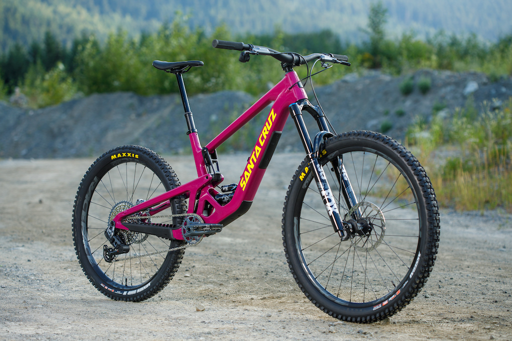

Santa Cruz Bicycles is a premium mountain bike brand known for high-quality design, durability, and performance. Founded in 1994 in California, the company became famous for its innovative suspension systems, especially the VPP (Virtual Pivot Point), which improves control and efficiency on rough trails. Santa Cruz bikes are popular among both professional riders and enthusiasts because of their strong carbon frames, smooth handling, and long-lasting build. Although they are more expensive than many other brands, riders often choose Santa Cruz for their reliability, advanced technology, and excellent trail performance.